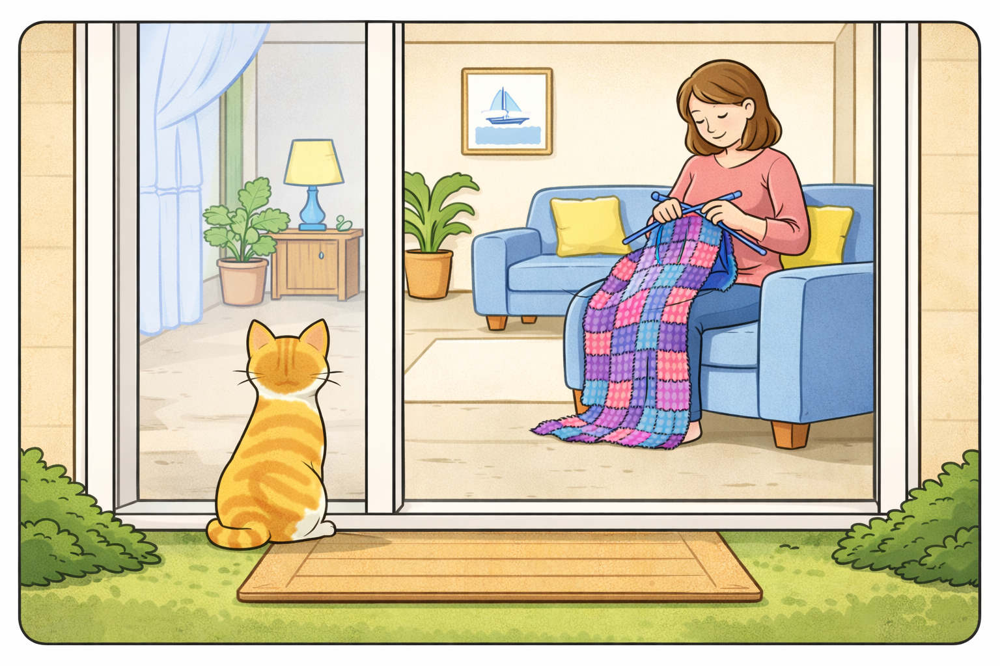
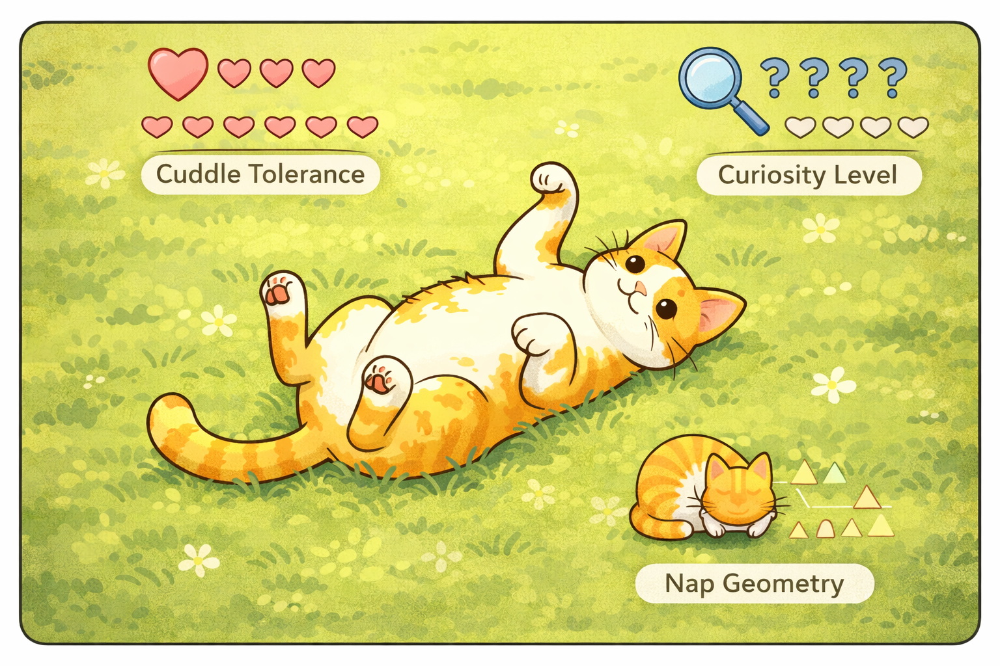
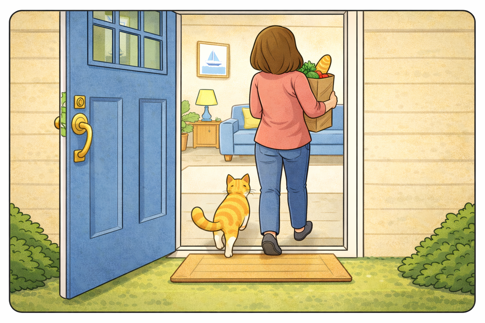
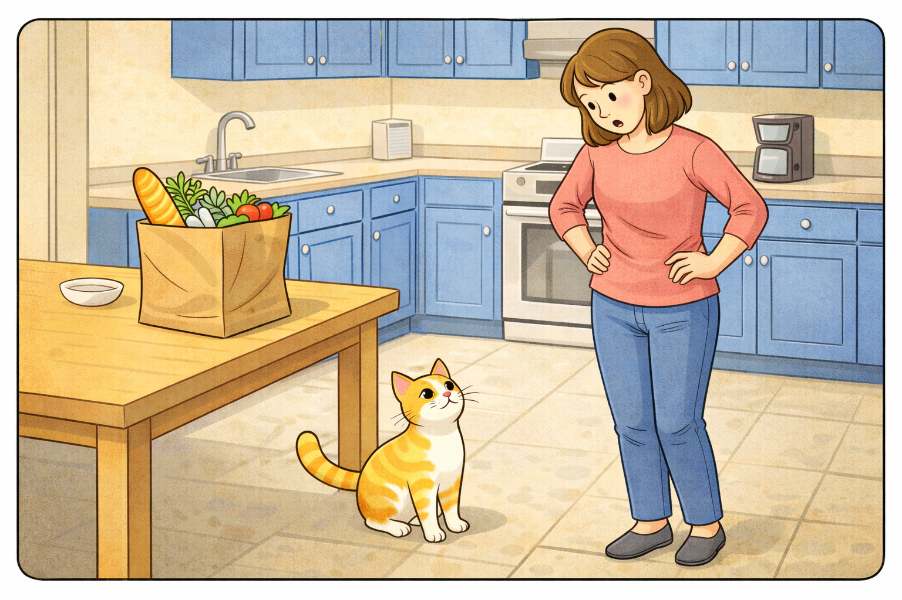
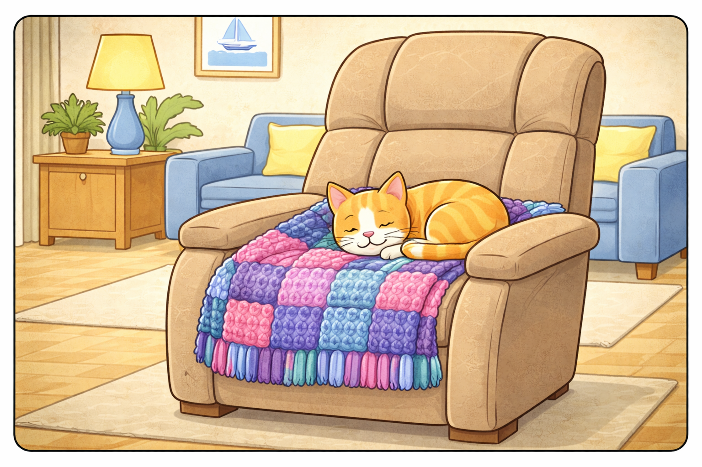
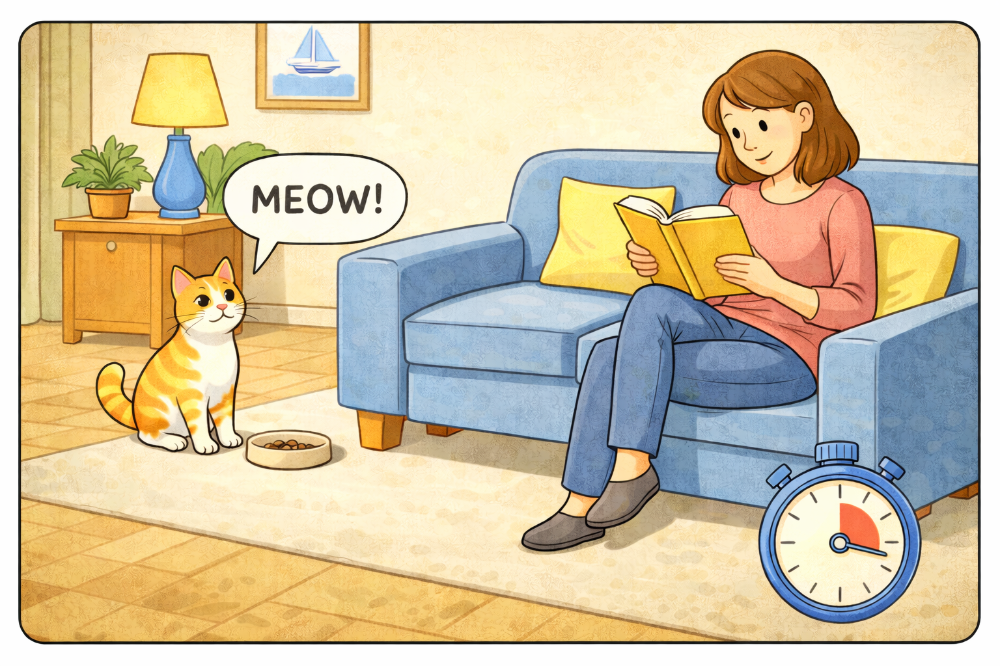
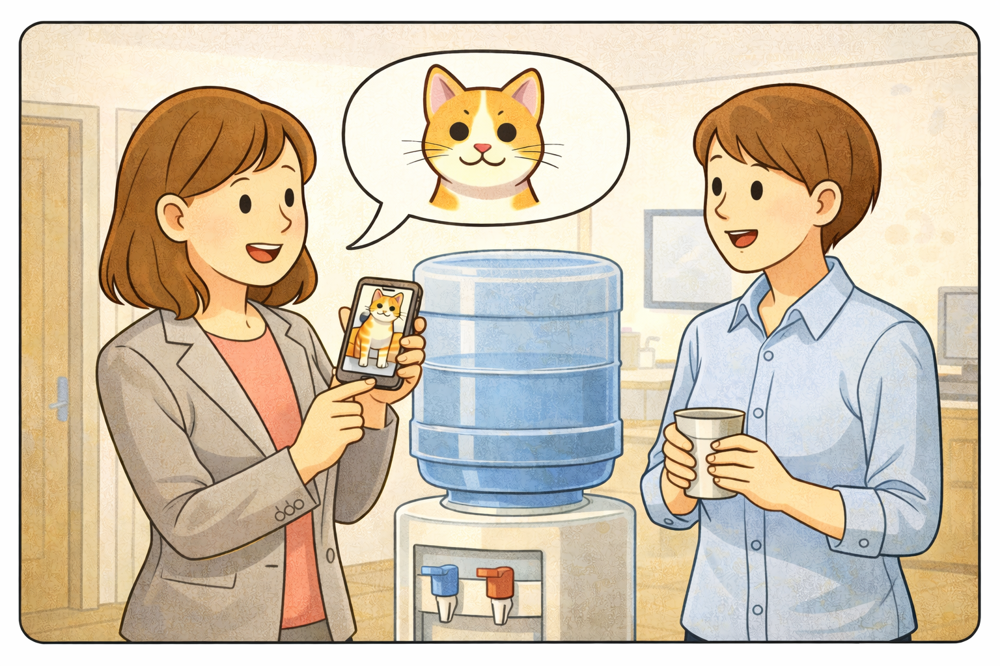
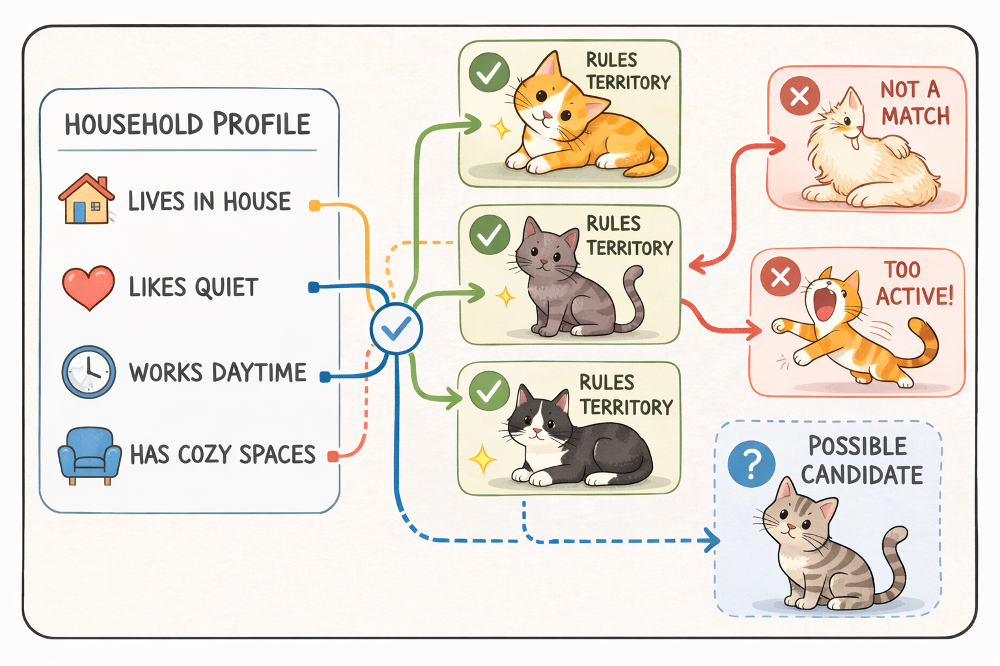
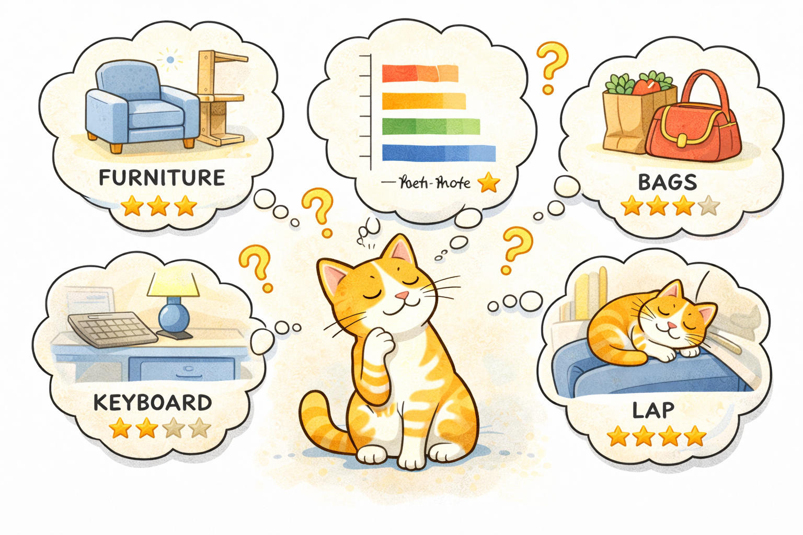

Step 1: Eligibility Detection
The system first identifies a human with suitable lap space, emotional openness, and acceptable snack storage. This stage determines whether cat placement can begin.
Welcome to the official guide for understanding how the Cat Distribution System works. This page explains how cats are matched, transported, received, and happily integrated into their new homes.
The Cat Distribution System is a highly sophisticated process that begins when a person becomes ready for feline assignment. The system reviews household conditions, cat temperament, readiness signals, and local cat availability. Once these factors line up, the system advances the cat through each stage below.

The system first identifies a human with suitable lap space, emotional openness, and acceptable snack storage. This stage determines whether cat placement can begin.

A cat is selected based on personality alignment. Important factors include cuddle tolerance, curiosity level, and preferred nap geometry.

The system organizes movement from current location to target human. This may occur through shelter adoption, neighborhood wandering, or surprise porch appearance.

The cat makes first contact. This usually includes direct eye contact, slow blinking, or immediate occupation of a chair that was clearly in use.

Once accepted, the cat maps the household, tests surfaces for nap suitability, and establishes ownership of at least one blanket.

The system remains active after delivery. It monitors food bowl refill speed, play frequency, and whether the human understands that the cat now runs the home.

The process begins when the future owner shows clear signs of readiness, such as discussing cats too often or leaving windows open for dramatic staring.

The matching engine compares available cats with the household profile and chooses a likely ruler for the space.

The assigned cat confirms placement by selecting furniture, bags, keyboards, or laps as priority territory.